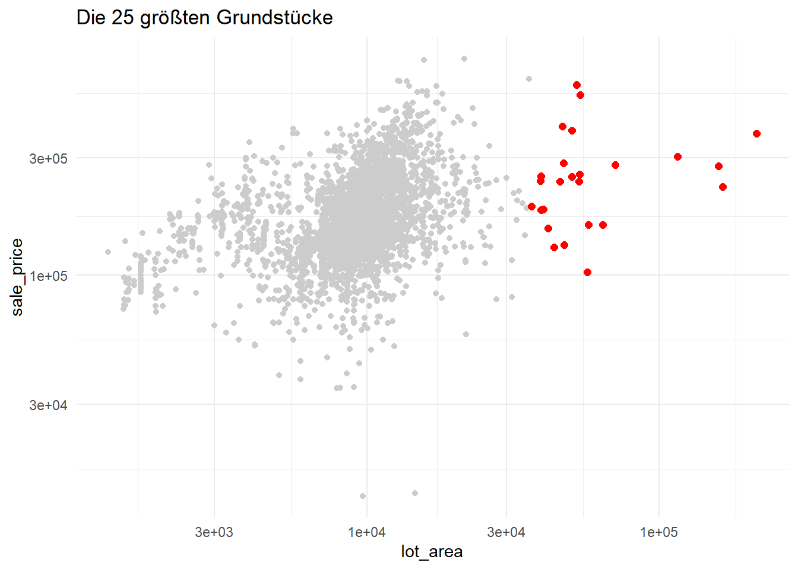

In diesem Tutorial wollen wir uns den ames Datensatz aus dem modeldata Package angucken. Dabei werden uns die Packages tidyverse und janitor unterstützen.
Wir sehen, dass dieser Datensatz ganz schön viele Variablen (Spalten) hat. Eine genaue Beschreibung aller Variablen findet sich online. Machen wir uns als Erstes das Leben leichter und formatieren die Namen, sodass wir bei Zugriff auf Daten nicht immer Groß- und Kleinschreibung beachten müssen. Das klingt erstmal sehr banal. Aber Typos passieren oft genug. Wir brauchen das nicht provozieren.
Wir brauchen nicht alle 74 Variablen gleichzeitig angucken. Wählen wir erstmal ein paar einfache Variablen aus. Dafür liefert uns das tidyverse die Funktion select(). Benutze diese Funktion, um von ames_gute_namen die Spalten sale_price, lot_area, ms_zoning und neighborhood zu extrahieren und in einer Variable ames_teil zu speichern.
Vermutlich fällt dir auf, dass hier viele Argumentnamen wie data =, mapping =, usw. fehlen. Tatsächlich habe ich diese Teile absichtlich weggelassen. Je mehr man mit ggplot2 arbeitet, desto mehr weiß man, dass das erste Argument in ggplot()data ist. Somit setzt ggplot() die Variable ames_teil in diese Argument ein, wenn ich nichts anderes angebe. Also brauche ich nichts genauer spezifizieren. Genau gleich verhält es sich mit geom_point(). Die meisten geom_*() Schichten fangen mit mapping = an. Auf diese Art und Weise wird der Code komprimierter und man spart sich Tipparbeit.
Wie komme ich an einen Teil der Daten, um damit zu rechnen?
Lass uns die Spalte sale_price extrahieren. Benutze dazu entweder den Dollar-Operator $ oder die Funktion pull(). Oder probier einfach mal beides aus. Speichere anschließend den extrahierten Vektor in eine Variable preise. Die ersten 50 Einträge dieses Vektors sollten so aussehen.
Benutze nun den Vektor preise, um die Spannweite (kleinster bis größter Wert) der Preise zu berechnen. Benutze dazu die Befehle range(), max(), min() oder c(). Anschließend solltest du den folgenden Output erhalten.
[1] 12789 755000
Extrahiere nun mithilfe von [] oder einer Kombination von select() und slice() die Zeilen 250, 500, 750, …, 2750 und die Spalten sale_price, lot_area, ms_zoning und neighborhood aus dem Datensatz ames_gute_namen. Dir kann dabei die Funktion seq() helfen. Hier ein Beispiel zu dieser Funktion.
seq(from =1, to =20, by =2)
[1] 1 3 5 7 9 11 13 15 17 19
Am Ende solltest du den folgenden Datensatz erhalten
Diesen Datensatz kannst du nun zusammen mit dem Ursprungsdatensatz ames_teil kombinieren, um die folgende Grafik zu generieren. Benutze dazu zwei Punktschichten mit unterschiedlichen data Argumenten. In einer Schicht verwendest du col = 'grey80' ind in der anderen Schicht col = 'red', size = 2. Falls du nicht auf die Lösung kommst, so kannst du sie dir ausnahmsweise einblenden lassen.
Lösung (nur anklicken, nachdem du selber getüffelt hast)
ggplot(mapping =aes(x = lot_area, y = sale_price)) +geom_point(data = ames_teil, col ='grey80') +geom_point(data = largest_25, col ='red', size =2) +scale_x_log10() +scale_y_log10() +labs(title ='Die 25 größten Grundstücke') +theme_minimal()

Markiere die teuersten Häuser jeder Nachbarschaft
Extrahiere nun einen Datensatz neighborhood_max3, der die 3 teuesten Häuser für jede Nachbarschaft enthält. Also so aussieht.